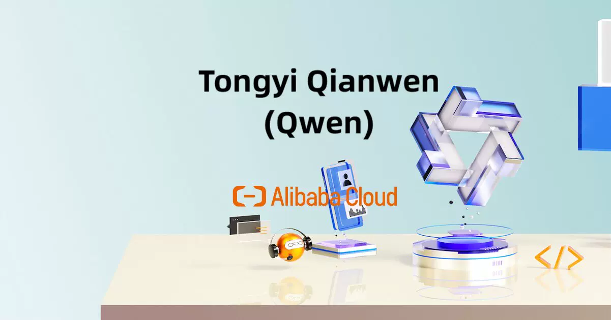

ChatGPT、Claude、Cursor、Midjourney… 主流 AI 工具的横向对比与深度评测。

阿里通义实验室发布 Qwen-Audio-3.0-Realtime 实时语音交互模型，在 Artificial Analysis 的 Speech Reasoning 子项中综合排名第一，超越 OpenAI GPT-Realtime-2。该模型采用 Thinker-Talker 架构，端到端延迟约 300ms，语音识别支持 113 种语言，价格仅为 GPT-Realtime-2 的 30-40%。这是中国 AI 模型首次在语音推理这一关键赛道登顶全球。
看今日完整快报 →ChatGPT · Claude · Kimi · DeepSeek · Gemini
5 款工具对比 →Midjourney · DALL·E 3 · SD · Firefly · Recraft
5 款工具对比 →Cursor · Copilot · Windsurf · Codex · Claude Code
5 款工具对比 →Runway · Pika · Kling · Vidu
4 款工具对比 →ElevenLabs · Fish Audio · CosyVoice · Azure · OpenAI
5 款工具对比 →ChatGPT vs Claude 深度横评
阅读 →Cursor、Copilot、Windsurf、Codex CLI、Claude Code 全面对比。包含 12 个 FAQ、11 种场景决策矩阵和真实编码实战案例。
ElevenLabs、Fish Audio、CosyVoice、Azure TTS、OpenAI TTS 对比。包含盲听测试、方言专项评测和 9 场景决策矩阵。